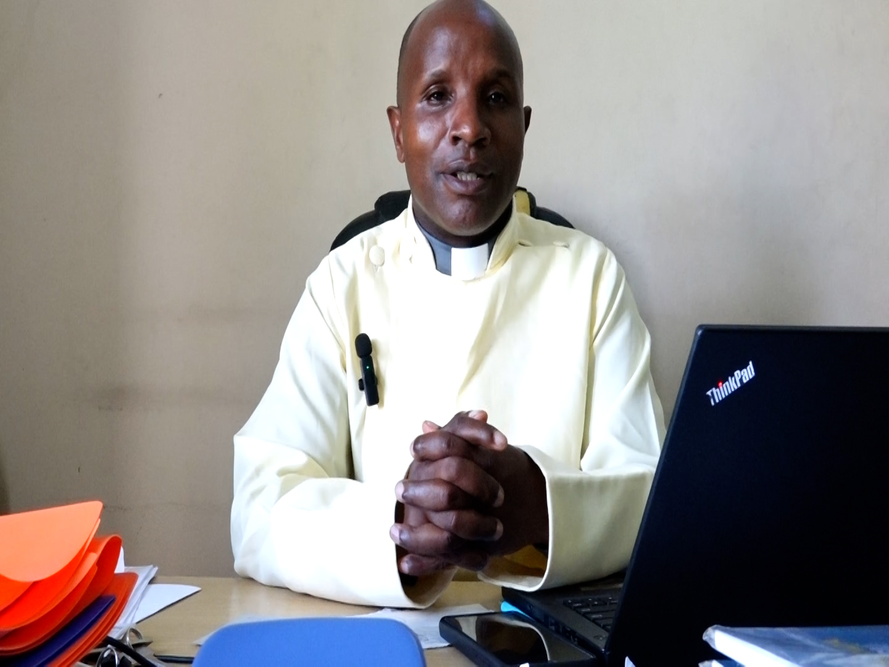
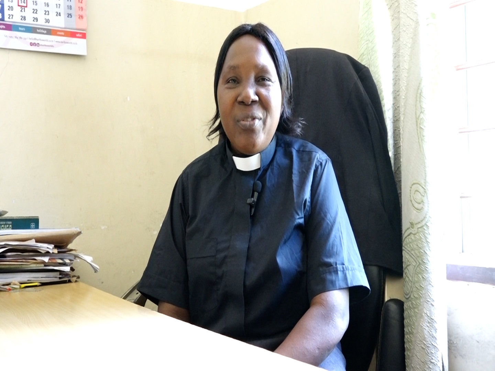
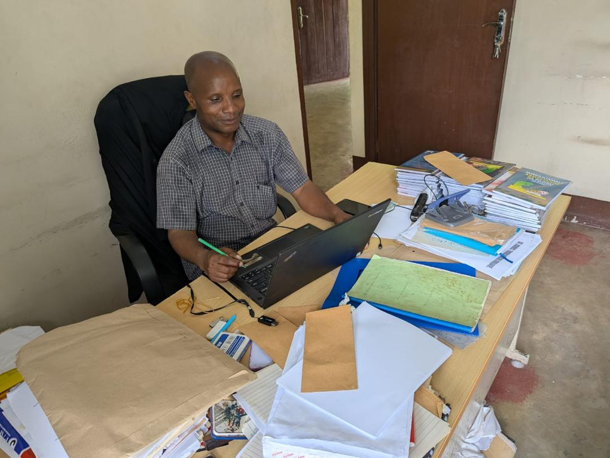

Apply Now
Start your journey at St. Marks Theological college.
St. Marks Theological College
Faith • Knowledge • Service
Join us in our mission to develop competent graduates who are grounded in academic excellence, Christian values, and ethical leadership. Our university serves as a center of knowledge, innovation, and spiritual formation for the transformation of society.
St. Marks Theological College is a faith-based higher learning institution under the Anglican Church of Tanzania. We are committed to developing competent graduates who are grounded in academic excellence, Christian values, and ethical leadership. Our university serves as a center of knowledge, innovation, and spiritual formation for the transformation of society.
We nurture leaders grounded in Christian values and service.
Quality education with modern learning systems.
Transforming society through leadership and knowledge.
A vibrant and unified Provincial hub of learning that forms visionary servant leaders to proclaim the Gospel and serve the holistic needs of humanity.
To provide high-quality, contextual theological training that integrates biblical truth with social responsibility, empowering graduates to lead their communities with integrity and professional excellence.
A comprehensive theological program designed to equip students with deep knowledge of the Bible, Christian doctrine, pastoral ministry, and church leadership. This program prepares graduates to serve effectively in ministry, mission work, and community transformation.
Canon Karstus Komba

Rev.Canon Emmanuel Shapemba

Rev. Eldah Katoto
Rev. Canon Mbulinyingi
Rev.Fr.Gerikoshua Baliko
Mariam Mrekoni


ST. MARK’S COLLEGE OF THE ANGLICAN CHURCH OF TANZANIA, BUGURUNI MALAPA, DAR ES SALAAM St. Mark’s College, located in Buguruni Malapa, is one of the oldest theological training institutions of the Anglican Church of Tanzania. It has produced many priests and bishops who have served both within the Anglican Church and in other Christian denominations. The college was originally established in 1894 at Mazizini, Zanzibar. In 1906, it was moved to Kiungani and became part of St. Paul’s College. Its primary aim was to train priests for the Universities Mission to Central Africa. On October 24, 1899, Bishop William Moore Richardson, the second Bishop of the Diocese of Zanzibar, separated it from St. Andrew’s and formally established it as St. Mark’s at Mazizini, Unguja, under Father Frank Weston. The college faced several challenges and was eventually closed on July 23, 1911. In 1917, it was relocated to Hegongo, Muheza, and continued its journey. After the establishment of the Diocese of Masasi on September 29, 1926, Bishop William Vincent Lucas saw the importance of having a local training college to reduce the need for priests to travel to Hegongo or Kiungani for theological education. Bishop Lucas purchased land at Namasakata and established St. Cyprian’s College, which opened in September 1930 under Father Frank Oswald Thorne, who later became Bishop of Nyasaland (Malawi) in 1936. The college began with seven students but was closed in 1934 after Father Thorne left. It reopened in 1936 under Father Rodgers Lamburn, introducing training programs for priests’ wives. Women were taught literacy, sewing altar garments and clerical vestments, and midwifery. However, the college was again temporarily closed in 1948 before reopening under Father Harold Wilkins. Meanwhile, the Diocese of Zanzibar decided during its Synod in January 1944 to relocate Hegongo College to Kalole Minaki under Father Neil Russell, where teaching continued in English. On November 30, 1960, when Trevor Huddlestone was consecrated Bishop of Masasi, he purchased land at Ngala Rondo and moved St. Cyprian’s College there from Namasakata. Training was conducted in both Kiswahili and English. Later, on July 31, 1969, St. Mark’s College was re-established in Buguruni Malapa by Archbishop John Thomas Mhina Sepeku. Archbishop Sepeku proposed relocating St. Cyprian’s College from Rondo to Buguruni Malapa (also known as Kichwele), a move supported by many UMCA bishops because of easier access to Dar es Salaam. The Buguruni Malapa site was part of the Kichwele estate, originally purchased by European missionaries in 1893 after acquiring land in Mbweni, Zanzibar, which had become overcrowded with freed slaves awaiting repatriation. Deacon Denys Seyiti and his wife Rebeka were entrusted with managing the farm and maintaining the property. After Bishop Huddlestone retired, Bishop Hilary Chisonga, a local Tanzanian bishop, succeeded him in Masasi but initially opposed moving the college to Buguruni. Eventually, however, the relocation was carried out with remaining staff, including Father James Potts, Father Martin Mbwana, and Mrs. Mary Peake. Following the re-establishment of St. Mark’s College on July 31, 1969, the first academic program was officially launched by Archbishop Leonard Beecher, Bishop Sepeku, and Bishop Laurean Rugambwa. At that time, Bishop Sepeku envisioned establishing a Faculty of Theology within the University of Dar es Salaam, but this vision was not realized. Within a short time, St. Mark’s College gained recognition, and Makerere University approved the introduction of a Diploma in Religious Studies in 1972. This program ended in 1978 due to the Kagera War, after which diocesan diploma programs were introduced. The college began with four students: Andrew Mkate (Ruvuma), Samuel Wandawanda (South West Tanganyika), Dominic Kifunda, and Andrew Mdoe (from the Dioceses of Zanzibar and Tanga). St. Mark’s College has continued to receive students from both within Tanzania and abroad. Bishop Sepeku envisioned having one unified theological college instead of three—St. Mark’s Buguruni, St. Cyprian’s Rondo, and St. Philip’s Kongwa. However, this proposal was rejected by the Synod in 1974 due to differences in traditions between UMCA and Church Missionary Society (CMS). At Rondo, Father George Briggs was appointed Principal of St. Cyprian’s College. In 1971, Father James Potts, who had been serving as Principal of St. Mark’s, returned to Europe, and Father Martin Mbwana took over leadership. Mrs. Mary Peake served in multiple roles, including librarian, English teacher, and caretaker for visiting staff. Today, the college continues to focus on theological education and training under the leadership of Rev. Canon Kalistus Komba.
Apply now to join our academic and spiritual journey.
Dar es Salaam, Tanzania
Email: info@stmarkuniversity.ac.tz